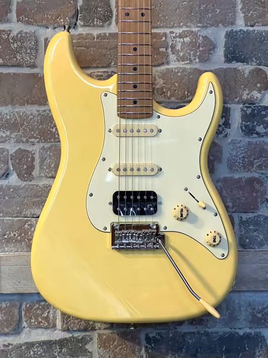

Découvrez notre collection de guitares électriques ! N'oubliez pas que le mieux est de venir en magasin pour essayer directement 😉
Retour aux instruments
×

Jet Guitars - JS-400 Vintage Yellow
Stratocaster
🪴 Essentiel
Jet Guitars - JS-400 Vintage Yellow
La JS-400 est le modèle Stratocaster pour petit budget, idéal pour découvrir le monde de la guitare électrique tout en gardant un confort de jeu et une qualité sonore adéquate ! Une version plus moderne et plus pêchue grâce à l'ajout du micro double.
Faites place à un modèle VIP ! Cette Vintera '60s (Mexican) Ice Blue Metallic est rare. Thème esthétique des années 60, cette guitare est une expérience unique en son genre par son corps bleu et sa sonorité Vintage. Une occasion et une exclusivité Rueil Musique !
Intervention(s) sur l'occasion : Réglage complet + entretien
Amateurs de funk et de sons qui claquent sévère, la Larry Carlton T3 New Gen 3-tone Sunburst gagnera facilement votre cœur. Look au vernis brillant, son clair et net via ses deux micros simples, une belle manière de rejoindre l'équipe des Telecaster !
Un look charbon de bois et un son d'enfer : la C-1 Standard Charcoal Satin est destinée pour les métalleux qui veulent une Superstratocaster à la forme sobre, mais aux micros puissants !
La GS300 : légère mais d'une puissance redoutable, cette SG dans l'esprit Bertignac saura ravir les amateurs de rock et de gros son. Un instrument abordable à l'esthétique sobre et sombre.
Inspirée de l'incontournable Les Paul, ici dans ses plus beaux atours vintage avec sa finition Honey Burst, la LP300 s'adresse avant tout aux débutants qui veulent s'essayer au blues/rock.
Fender - Player II Telecaster (Mexican) - Butterscotch Blonde
Telecaster
✨ Plus
Fender - Player II Telecaster (Mexican) - Butterscotch Blonde
La Telecaster Player II est une guitare au son vintage et style mythique de Fender tout en restant moderne. Un sélecteur à trois positions vous permettra de basculer du timbre doux du micro manche aux sonorités tranchantes du micro chevalet.
Pour un son qui claque, la Telecaster est ma guitare de prédilection, et la Player II coche toutes les cases : super son, très légère, et un look superbe !
La légendaire Stratocaster imaginée par Leo Fender, aujourd'hui dans sa version mexicaine Player II qui allie tradition et modernité. Une véritable référence depuis plus de 60 ans, confort, polyvalence, et surtout le son... tout y est !
Fender - Player II Stratocaster (Mexican) Sunburst
Stratocaster
✨ Plus
Fender - Player II Stratocaster (Mexican) Sunburst
La légendaire Stratocaster imaginée par Leo Fender, aujourd'hui dans sa version mexicaine Player II qui allie tradition et modernité. Une véritable référence depuis plus de 60 ans, confort, polyvalence, et surtout le son... tout y est !
Fender - Player II Stratocaster (Mexican) White Blonde
Stratocaster
✨ Plus
Fender - Player II Stratocaster (Mexican) White Blonde
La légendaire Stratocaster imaginée par Leo Fender, aujourd'hui dans sa version mexicaine Player II qui allie tradition et modernité. Une véritable référence depuis plus de 60 ans, confort, polyvalence, et surtout le son... tout y est !
Fender - Player II Stratocaster (Mexican) Polar White
Stratocaster
✨ Plus
Fender - Player II Stratocaster (Mexican) Polar White
La légendaire Stratocaster imaginée par Leo Fender, aujourd'hui dans sa version mexicaine Player II qui allie tradition et modernité. Une véritable référence depuis plus de 60 ans, confort, polyvalence, et surtout le son... tout y est !
Gretsch - G6120-125 125th Signature Chet Atkins Professionnel
Archtop
💎 Prestige
Gretsch - G6120-125 125th Signature Chet Atkins Professionnel
Notre modèle de luxe d'exception. Gretsch 6120-125 Anniversary LE 2007 en finition Gold Leaf : une édition limitée rare et luxueuse au look éclatant. Corps hollow en érable, micros TV Jones Classic, Bigsby B6, chevalet Adjusto-Matic. Un bijou sonore et visuel, alliant le twang vintage Gretsch à une esthétique dorée unique.
Faite au Québec, la Passion RG-3 Indigo est reconnue pour son sustain incomparable et le confort qu'elle offre. Une de nos préférées dans l'équipe de Rueil Musique.
Tout nouveau tout beau ! La très attendue Origin Design ST de chez Prodipe, ici dans sa finition Atlantic Green qui vous rappellera les vagues de la côte armoricaine lors de vos riffs et solos. Un instrument à mettre entre toutes les mains !
L'art du raffinement incarné dans une guitare électrique dans une teinte inspirée des crus nords bourguignons : la Origin Design ST Rouge Bourgogne ! Une belle Stratocaster qui rend hommage à la tradition du vin par ses finitions, le tout avec un super confort de jeu et une qualité sonore studio.
Âmes sombres approchez ! La Demon 6 Floyd Rose (Aged Black Satin) est pensée dans l'esprit Metal Gothic : croix sur la touche, micros actifs pour faire hurler les amplis, floyd rose pour tordre au max les cordes, le tout dans un corps de Superstratocaster noir satiné.
Impossible de passer à côté de son design atypique, l'Avenger rejoint la ligue des Super Stratocasters avec comme super pouvoir son hyperpolyvalence ! Deux humbuckers Schecter Diamond '78 qui peuvent se transformer en micros simples, elle s'adapte à toutes les situations, une guitare électrique avec une véritable personnalité !
Gibson - Les Paul Custom Shop Quilt Limited Run Iced Tea
Les Paul
💎 Prestige
Gibson - Les Paul Custom Shop Quilt Limited Run Iced Tea
Une pièce rare et très élégante : la Les Paul Custom Shop Quilt Limited Run Iced combine un tableau en érable « quilt » extrêmement figuré avec une finition chaude et subtile. Sustain riche, excellente jouabilité, et son entre clarté et puissance, c'est le nec plus ultra pour tous les styles. Elle représente à la fois un instrument de haute performance et une pièce de collection.
Gibson - Les Paul Custom Shop Qilt Limited Run Natural
Les Paul
💎 Prestige
Gibson - Les Paul Custom Shop Qilt Limited Run Natural
Fabriquée aux États-Unis, la Les Paul Custom Shop Qilt Limited Run Natural est faite pour quelqu’un qui cherche non seulement un son d’exception, mais aussi une pièce de collection avec une esthétique remarquable. Elle combine le meilleur de la tradition Les Paul Custom (sustain, bois, construction) avec un look très “show piece” grâce à la table quilt. Un véritable bijou !
La E1000 : une Mustang/Jaguar qui a la particularité d'embarquer des effets et des simulations d'ampli ! On peut alors se brancher sur un ampli de guitare électrique, ou alors un ampli acoustique, ou directement via un casque, avec ou sans le module d'effets !
La E1000 : une Mustang/Jaguar qui a la particularité d'embarquer des effets et des simulations d'ampli ! On peut alors se brancher sur un ampli de guitare électrique, ou alors un ampli acoustique, ou directement via un casque, avec ou sans le module d'effets !
La E1000 : une Mustang/Jaguar qui a la particularité d'embarquer des effets et des simulations d'ampli ! On peut alors se brancher sur un ampli de guitare électrique, ou alors un ampli acoustique, ou directement via un casque, avec ou sans le module d'effets !
La E1000 : une Mustang/Jaguar qui a la particularité d'embarquer des effets et des simulations d'ampli ! On peut alors se brancher sur un ampli de guitare électrique, ou alors un ampli acoustique, ou directement via un casque, avec ou sans le module d'effets !
La Vintera '60s Custom Black Body, ou plutôt redécouvrir l'expérience des années 60 avec une Stratocaster style Vintage : touche, mécaniques, chevalet, micros, tout est pensé pour offrir le jeu le plus authentique ! Cerise sur le gâteau, un modèle monté par nos soins avec un corps customisé en noir, en hommage à Eric Clapton !
La JS-300 est le modèle Stratocaster pour petit budget, idéal pour découvrir le monde de la guitare électrique tout en gardant un confort de jeu et une qualité sonore adéquate ! Modèle orienté pour les joueurs polyvalents grâce au micro simple.
Ce qu'on apprécie chez Jet Guitars : des instruments sans équivalent sur le marché de l'entrée de gamme, avec de supers manches en érable torréfié qui nous permettent des réglages au millimètre.
La JS-300 est le modèle Stratocaster pour petit budget, idéal pour découvrir le monde de la guitare électrique tout en gardant un confort de jeu et une qualité sonore adéquate ! Modèle orienté pour les joueurs polyvalents grâce au micro simple.
Ce qu'on apprécie chez Jet Guitars : des instruments sans équivalent sur le marché de l'entrée de gamme, avec de supers manches en érable torréfié qui nous permettent des réglages au millimètre.
La JS-300 est le modèle Stratocaster pour petit budget, idéal pour découvrir le monde de la guitare électrique tout en gardant un confort de jeu et une qualité sonore adéquate ! Modèle orienté pour les joueurs polyvalents grâce au micro simple.
Ce qu'on apprécie chez Jet Guitars : des instruments sans équivalent sur le marché de l'entrée de gamme, avec de supers manches en érable torréfié qui nous permettent des réglages au millimètre.
La JS-300 est le modèle Stratocaster pour petit budget, idéal pour découvrir le monde de la guitare électrique tout en gardant un confort de jeu et une qualité sonore adéquate ! Modèle orienté pour les joueurs polyvalents grâce au micro simple.
Ce qu'on apprécie chez Jet Guitars : des instruments sans équivalent sur le marché de l'entrée de gamme, avec de supers manches en érable torréfié qui nous permettent des réglages au millimètre.
Une guitare électrique type Les Paul qui allie style et légèreté ! Une superbe table d'harmonie en érable ondé pommelé, avec une configuration de micros polyvalente grâce aux splits et au sélecteur
La Squier Affinity Series, ou plutôt une stratocaster des années 2000 entrée de gamme pour ceux qui veulent découvrir tranquillement la guitare électrique, parfait pour les petits budgets !
Intervention(s) sur l'occasion : Désoxydation électro, réglage complet et entretien
La JS-400 est le modèle Stratocaster pour petit budget, idéal pour découvrir le monde de la guitare électrique tout en gardant un confort de jeu et une qualité sonore adéquate ! Une version plus moderne et plus pêchue grâce à l'ajout du micro double.
La JS-400 est le modèle Stratocaster pour petit budget, idéal pour découvrir le monde de la guitare électrique tout en gardant un confort de jeu et une qualité sonore adéquate ! Une version plus moderne et plus pêchue grâce à l'ajout du micro double.
La JS-400 est le modèle Stratocaster pour petit budget, idéal pour découvrir le monde de la guitare électrique tout en gardant un confort de jeu et une qualité sonore adéquate ! Une version plus moderne et plus pêchue grâce à l'ajout du micro double.
La JS-400 est le modèle Stratocaster pour petit budget, idéal pour découvrir le monde de la guitare électrique tout en gardant un confort de jeu et une qualité sonore adéquate ! Une version plus moderne et plus pêchue grâce à l'ajout du micro double.
La JS-400 est le modèle Stratocaster pour petit budget, idéal pour découvrir le monde de la guitare électrique tout en gardant un confort de jeu et une qualité sonore adéquate ! Une version plus moderne et plus pêchue grâce à l'ajout du micro double.
La JS-400 est le modèle Stratocaster pour petit budget, idéal pour découvrir le monde de la guitare électrique tout en gardant un confort de jeu et une qualité sonore adéquate ! Une version plus moderne et plus pêchue grâce à l'ajout du micro double.
La JS-400 est le modèle Stratocaster pour petit budget, idéal pour découvrir le monde de la guitare électrique tout en gardant un confort de jeu et une qualité sonore adéquate ! Une version plus moderne et plus pêchue grâce à l'ajout du micro double.
La Pacifica 112J est une jolie Stratocaster conçue pour les débutants. 2 micros simples et 1 micro double, parfait pour jouer un peu de tout et de découvrir le monde de la guitare électrique !
Tout en noir : c'est le mot d'ordre sur la S-400 Mat Black, ou plutôt la guitare électrique conçue pour les amateurs sérieux de Metal qui veulent de la puissance sonore à prix abordable. Appréciée par l'équipe pour son design sobre mais élégant, elle offre deux humbuckers Spira Villain (output 12kHz), 24 frettes jumbo pour des bends précis partout, et un manche en forme modern D.
La S-400 Maple Wine Red est une bête de scène aux finitions rouge, taillée pour les riffs lourds et les solos tranchants via ses 24 frettes, pour ceux qui veulent puissance et précision du métal à prix abordable. Si vous êtes un amateur de Heavy Metal, cette guitare électrique est tout ce dont vous avez besoin !
Une Telecaster qui déménage, la T-400 est spécialement taillée pour les joueurs de Metal ! Deux humbuckers, 24 frettes, une guitare électrique métissée !
Godin - Montreal Premiere LTD Desert Blue TV Jones & Bigsby
Archtop
💎 Prestige
Godin - Montreal Premiere LTD Desert Blue TV Jones & Bigsby
Entre tradition et modernité, la Godin Montréal Première Blue Désert Ltée se présente via un format Archtop tout en offrant un panel de sonorités grâce à ses micros TV Jones et son vibrato Bigsby. Adaptée pour le jazz, le rock et d'autres genres, cette guitare ne laissera personne indifférent !
C'est dans son nom : du naturel pour rappeler que tout part du bois quand il s'agit de guitare. Polyvalence à la clé, la Larry Carlton S5 Natural DC MN est avant tout pour ceux qui veulent un look qui se démarque tout en restant discret en finitions. Une belle stratocaster pour les joueurs intérmédiaires en somme !
La JT-350 est le modèle Telecaster pour petit budget, parfait pour ceux désirant un son plus claquant pour de la funk ou du jazz, le tout sans sacrifier confort et qualité sonore !
La JT-350 est le modèle Telecaster pour petit budget, parfait pour ceux désirant un son plus claquant pour de la funk ou du jazz, le tout sans sacrifier confort et qualité sonore !
L’élégance à la française. Fabriquée à la main dans l’atelier de Tom Marceau, la Dominante LP incarne le savoir-faire artisanal haut de gamme. Deux humbuckers Marceau P4 splittables pour une palette sonore riche et polyvalente.
La Summit Classic SG représente parfaitement l'excellence et le savoir-faire des ateliers Godin en l'incarnant dans une « Les Paul » légère, confortable et précise ! Disponible en Vintage Burst et en noir mat en configuration double humbucker.
En plus d'avoir un son chaleureux, elle est super confortable notamment lorsqu'il s'agit d'atteindre les frêtes aiguës. Ma chouchoute du magasin, clairement
La Summit Classic SG représente parfaitement l'excellence et le savoir-faire des ateliers Godin en l'incarnant dans une « Les Paul » légère, confortable et précise ! Disponible en Vintage Burst en configuration P90.
La Summit Classic SG représente parfaitement l'excellence et le savoir-faire des ateliers Godin en l'incarnant dans une « Les Paul » légère, confortable et précise ! Disponible en Vintage Burst et en noir mat en configuration double humbucker.
Fender - American Professional II Stratocaster (USA) - Mystic Surf Green
Stratocaster
💖 Passion
Fender - American Professional II Stratocaster (USA) - Mystic Surf Green
L'American Professional II, ou plutôt le modèle iconique de Fender par excellence. Commutateur push-push installé sur le second contrôle de tonalité, manche en deep C, tout est repensé pour offrir une expérience de jeu moderne dans un format classique, et ce dans une qualité ultra-optimale !
Une incontournable des guitares archtops, la 5th Avenue a été pensée dans l’esprit jazz des années 50. On retrouve une caisse 3/4 en merisier canadien avec une touche palissandre aux finitions semi brillantes et au dégradé vintage. Dotée d’un micro Kingpin P90, cet instrument garde à la fois la chaleur d’un humbucker et à la fois le mordant d’un micro simple !
Une guitare archtop au pan coupé, la 5th Avenue CW a été pensée dans l’esprit jazz des années 50. On retrouve une caisse 3/4 en merisier canadien avec une touche palissandre aux finitions semi brillantes et au dégradé vintage. Ici, deux micros Kingpin P90, cet instrument garde à la fois la chaleur d’un humbucker et à la fois le mordant d’un micro simple !
Vivez à nouveau l'expérience de la stratocaster dans un instrument moderne made in France. L'Experience Trad ST, une belle réinterprétation du modèle iconique de Leo Fender !
L'atelier Marceau nous dévoile un hommage vibrant au hard rock des années 70 avec cette SG d'exception, 100% bretonne. La G61 Style SG, une exclusivité Rueil Musique !
L'atelier Marceau nous dévoile un hommage vibrant au hard rock des années 70 avec cette SG d'exception, 100% bretonne. La G61 Style SG, une exclusivité Rueil Musique !
Puissante et acérée, la C-1 Apocalypse rend hommage aux sonorités aggressives avec un confort de jeu impeccable. Une arme de destruction massive taillée pour le metal moderne !
Puissance et élégance. Fabriquée en Allemagne, la Starplayer Special DSP-RDS combine design rétro et performance moderne. Corps en aulne américain massif, table et manche en érable, touche palissandre d’Inde. Équipée d’un duo de micros Duesenberg – GrandVintage et CrunchBucker – pour un son chaud, précis et dynamique. Une guitare fiable, brillante et racée, avec un look Red Sparkle éclatant.